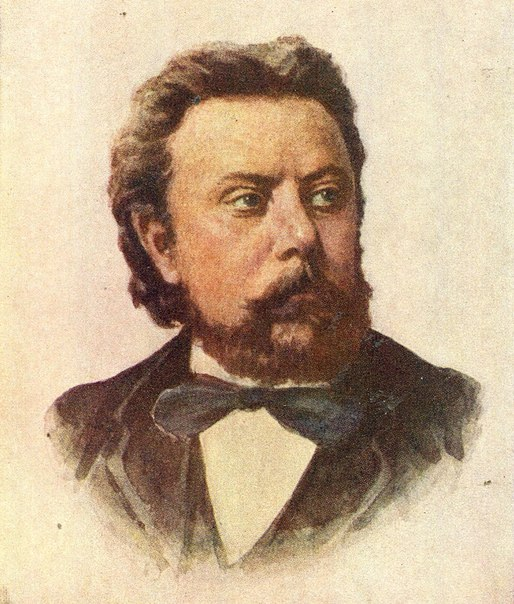

music На главную Выход  Модест Петрович Мусоргский Вокальные произведения Картинки с выставки Вокальные произведения Слушайте <a href='https://music.yandex.ru/album/9503961/track/61099567'>Юные годы: I. Где ты, звёздочка?</a> — <a href='https://music.yandex.ru/artist/4766396'>Галина Кузнецова</a> на Яндекс Музыке Слушайте <a href='https://music.yandex.ru/album/9523127/track/61173376'>Сиротка</a> — <a href='https://music.yandex.ru/artist/8545064'>Александр Ведерников (Ст.)</a> на Яндекс Музыке Слушайте <a href='https://music.yandex.ru/album/9503961/track/61099572'>Юные годы: XVI. Спи, усни, крестьянский сын</a> — <a href='https://music.yandex.ru/artist/4766396'>Галина Кузнецова</a> на Яндекс Музыке Наверх Картинки с выставки Слушайте <a href='https://music.yandex.ru/album/1432397/track/13180865'>Гном</a> — <a href='https://music.yandex.ru/artist/8320'>Модест Петрович Мусоргский</a> на Яндекс Музыке Слушайте <a href='https://music.yandex.ru/album/1432397/track/13180867'>Избушка на курьих ножках / Баба-Яга</a> — <a href='https://music.yandex.ru/artist/8320'>Модест Петрович Мусоргский</a> на Яндекс Музыке Слушайте <a href='https://music.yandex.ru/album/1432397/track/13180873'>Богатырские ворота / В стольном городе во Киеве</a> — <a href='https://music.yandex.ru/artist/8320'>Модест Петрович Мусоргский</a> на Яндекс Музыке Наверх
Вокальные произведения Слушайте <a href='https://music.yandex.ru/album/9503961/track/61099567'>Юные годы: I. Где ты, звёздочка?</a> — <a href='https://music.yandex.ru/artist/4766396'>Галина Кузнецова</a> на Яндекс Музыке Слушайте <a href='https://music.yandex.ru/album/9523127/track/61173376'>Сиротка</a> — <a href='https://music.yandex.ru/artist/8545064'>Александр Ведерников (Ст.)</a> на Яндекс Музыке Слушайте <a href='https://music.yandex.ru/album/9503961/track/61099572'>Юные годы: XVI. Спи, усни, крестьянский сын</a> — <a href='https://music.yandex.ru/artist/4766396'>Галина Кузнецова</a> на Яндекс Музыке Наверх
Картинки с выставки Слушайте <a href='https://music.yandex.ru/album/1432397/track/13180865'>Гном</a> — <a href='https://music.yandex.ru/artist/8320'>Модест Петрович Мусоргский</a> на Яндекс Музыке Слушайте <a href='https://music.yandex.ru/album/1432397/track/13180867'>Избушка на курьих ножках / Баба-Яга</a> — <a href='https://music.yandex.ru/artist/8320'>Модест Петрович Мусоргский</a> на Яндекс Музыке Слушайте <a href='https://music.yandex.ru/album/1432397/track/13180873'>Богатырские ворота / В стольном городе во Киеве</a> — <a href='https://music.yandex.ru/artist/8320'>Модест Петрович Мусоргский</a> на Яндекс Музыке Наверх